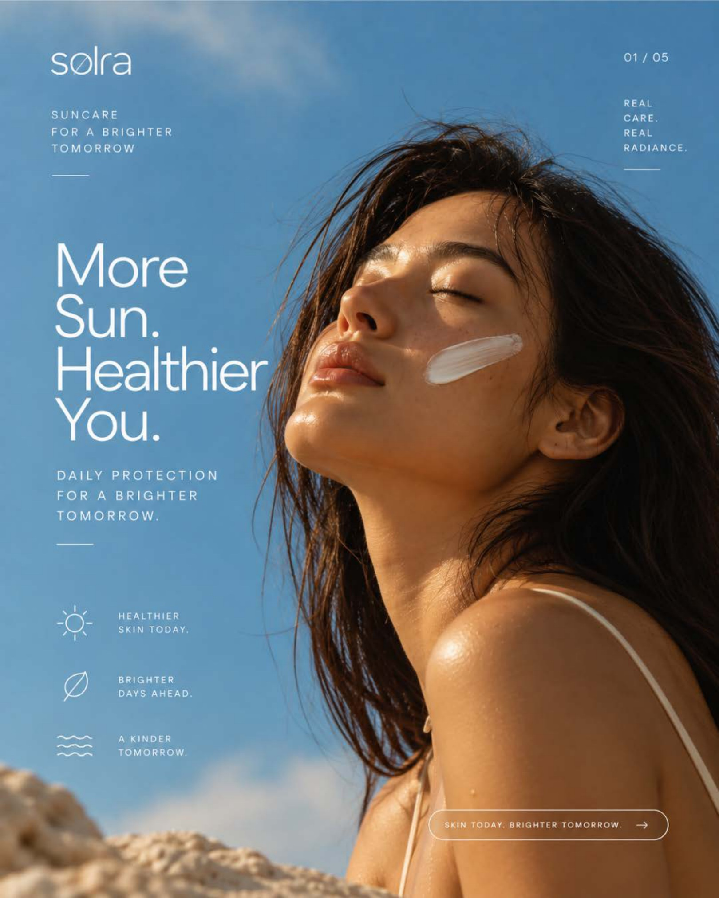
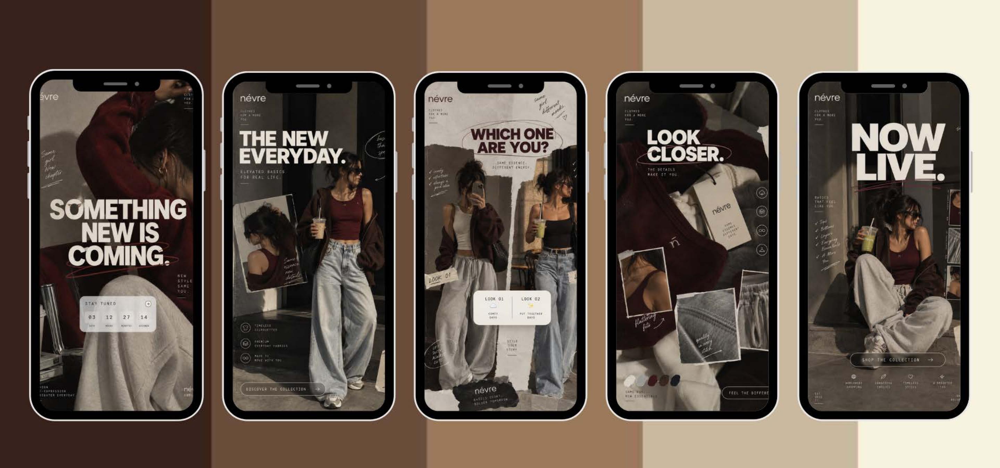
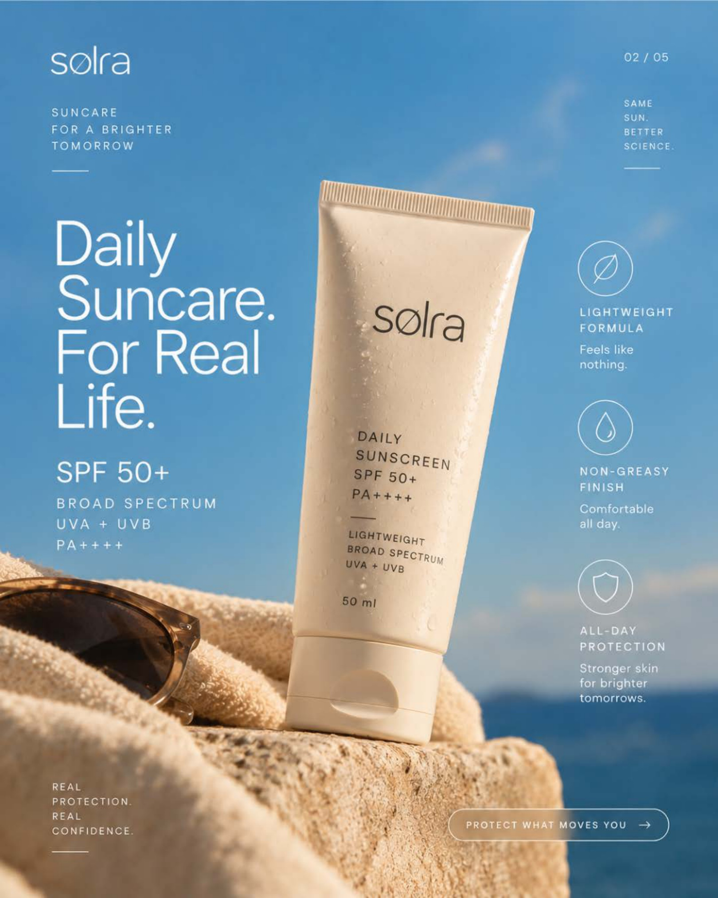
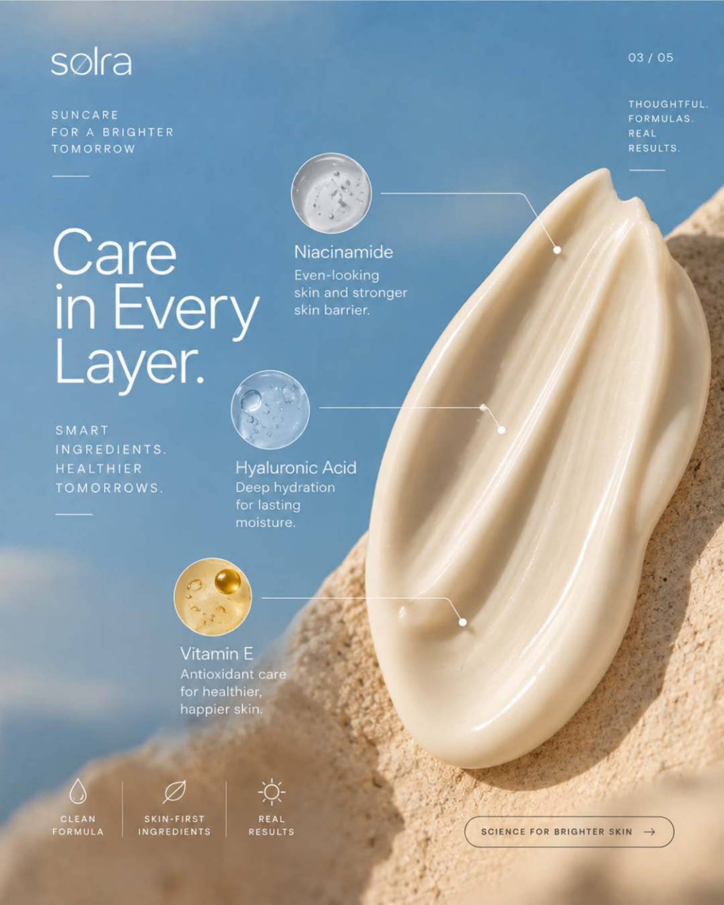
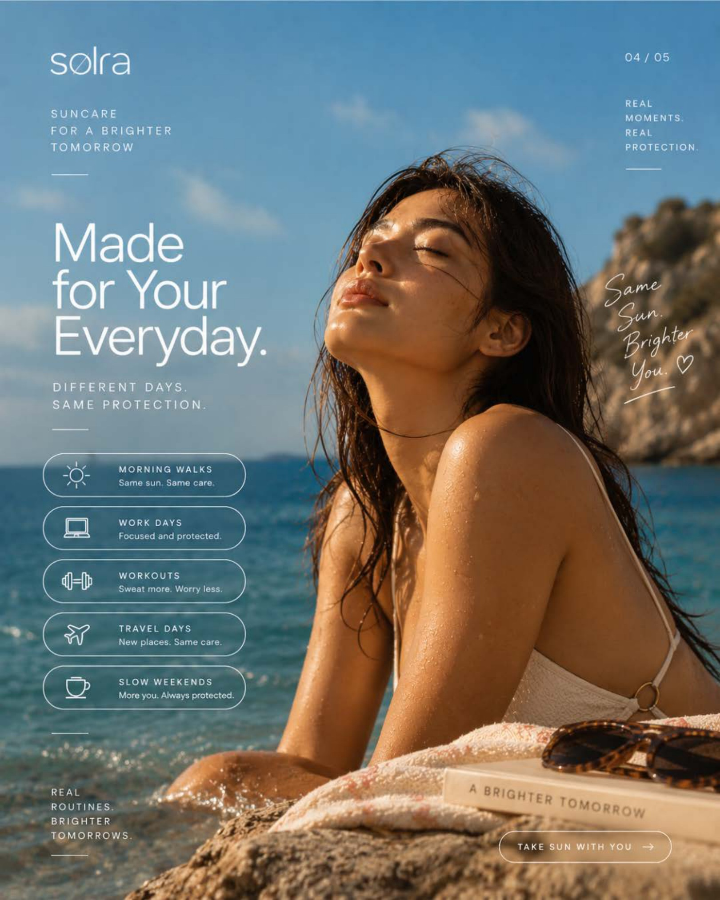
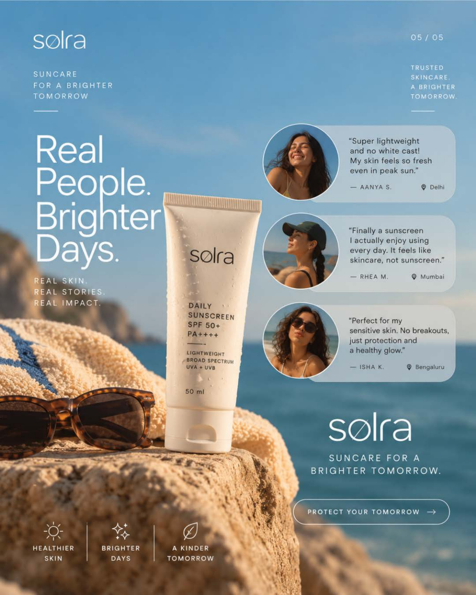

06
SOCIAL CONTENT DESIGN
STORIES + CAROUSEL · CONCEPT SYSTEMS
Self-Initiated Concepts · Format Adaptability · Story Sequencing · Multi-Slide Feed Narrative
CURATORIAL PREMISE
This project demonstrates the ability to design for fundamentally different social media formats — adapting visual communication, layout cadence, and storytelling strategies according to the specific platform mechanics and distinct brand identities of NÉVRE and SOLRA.
NÉVRE
INSTAGRAM STORY DESIGN

SOLRA
INSTAGRAM CAROUSEL DESIGN




FORMAT-SPECIFIC DESIGN PRINCIPLES
NÉVRE
STORY FORMAT (VERTICAL 9:16)- Short-form vertical narrative designed for rapid consumption
- Mobile-first full-screen immersive composition
- Sequential frames creating anticipation across taps
- Interaction-focused with prominent CTA touchpoints
SOLRA
CAROUSEL FORMAT (FEED MULTI-SLIDE)- Multi-slide feed architecture built for dwell-time and swipe retention
- Information-led educational & product storytelling
- Slide-to-slide continuity with edge-bleeding elements
- Balanced combination of hook, depth, and concluding conversion
DESIGNING FOR THE FORMAT
Effective social design is never about applying a single uniform template. It demands an acute understanding of how format ergonomics, user intent, platform mechanics, and distinct brand positioning intersect to deliver impactful creative work.
PLATFORM MECHANICS
+
CONTENT FORMAT
+
AUDIENCE INTENT
+
COMMUNICATION GOAL